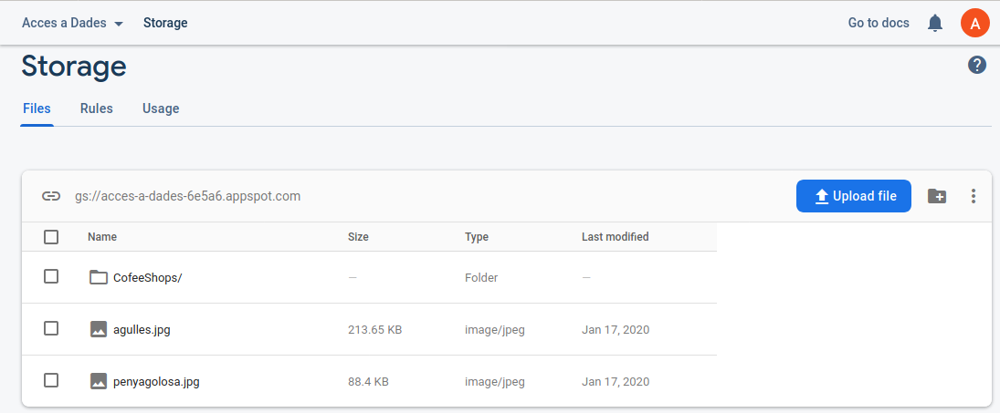
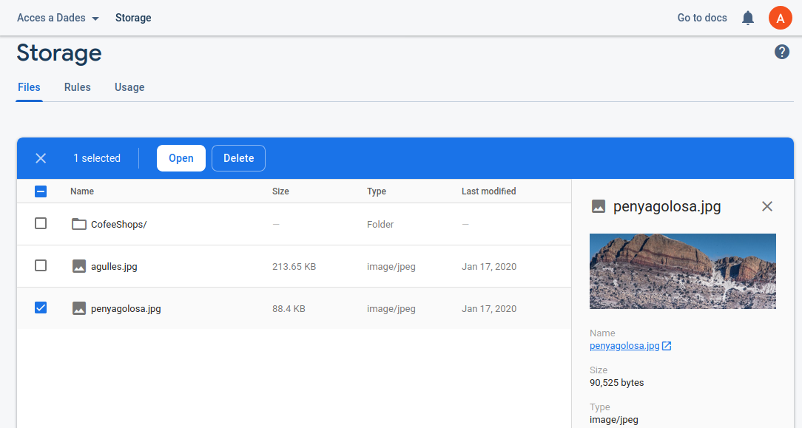
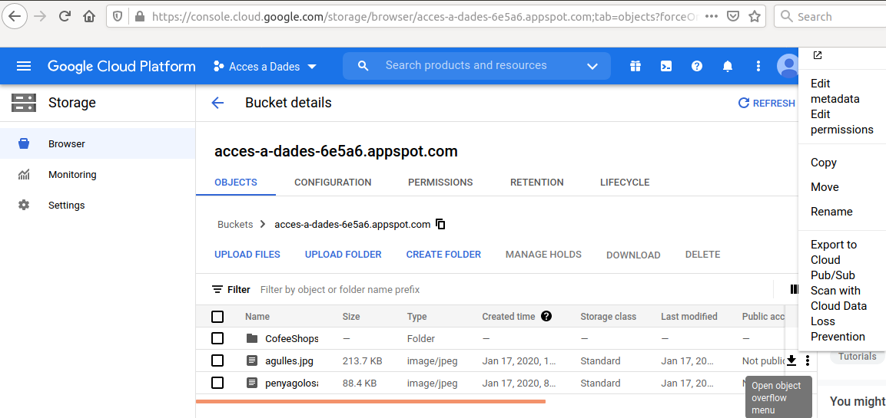
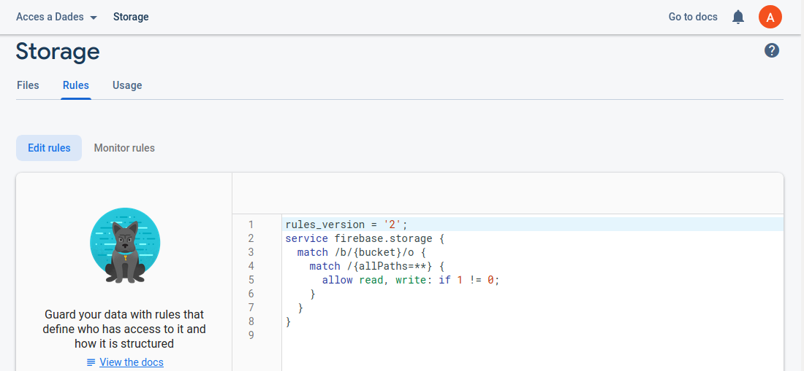
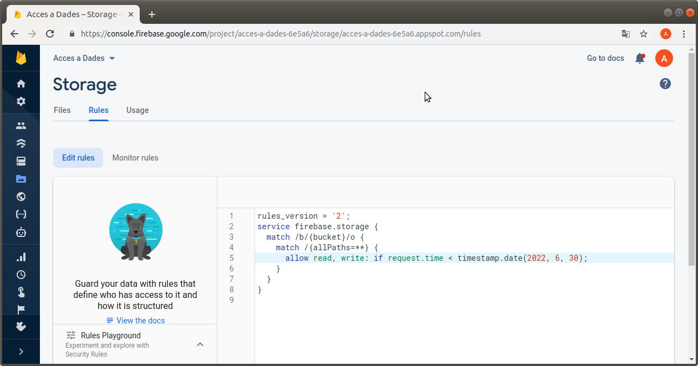

5.4 - Cloud Storage
Cloud Storage ens permet guardar fitxers còmodament: fotos, vídeos, audios, ...
Combinat amb Reltime Database o Cloud Firestore ens permet guardar les nostres dedes de forma eficient, ja que podem guardar en les primeres les referències als fitxers que pugem al Storage.
L'entorn que ens ofereix Firebase per a gestionar Cloud Storage és molt senzill i no té cap secret, ja que ens permetrà pujar els fitxers, organitzant-los en subdirectoris, i també esborrar-los. En principi no necessitem més.

Si punxem en un fitxer podrem veure les seues característiques, i si el seleccionem podrem esborrar-lo o obrir-lo en una altra finestra.

Aquest entorn, de tan senzill, fins i tot es queda un poc curt, ja que no ens permetrà canviar el nom d'un fitxer, o moure'l a una carpeta, ...
Si vulguérem fer algun canvi d'aquestos, canviar el nom o canviar de carpeta, ho hauríem de fer des d'un altre lloc, un altre navegador del Google Cloud Storage (https://console.cloud.google.com/storage/browser):

on es pot observar com en els 3 puntets de la dreta d'un fitxer ens apareixen moltes opcions com copiar, menejar, renomenar, ...
Però nosaltres en principi tindrem prou amb la primera consola. Anem alerta de col·locar les coses al lloc, i si no estan, esborrem i col·loquem al lloc correcte.
Ja que estem en la consola, controlem els permisos (Rules) en la pestanya corresponent de la consola:

En aquesta imatge s'aprecia que no hi haurà permís per a llegir ni escriure fora de la consola. Com que el que volem és accedir des de les aplicacions d'Eclipse i d'Android, substituirem el permís per aquest:
allow read, write: if request.time < timestamp.date(2023, 6, 30);
amb una data en la qual no ens pillem els dits.
Nota
Observeu com tant en la consola senzilla com en la del browser de GoogleCloud, ens posa una adreça, que en el meu cas és: gs://acces-a-dades-6e5a6.appspot.com. Es tracta de l'adreça del bucket (poal, contenidor) on estan col·locats els fitxers. Podem crear més buckets, però no ho complicarem. Haurem de tenir clara la referència a aquest bucket per defecte.
Llicenciat sota la Llicència Creative Commons Reconeixement SenseObraDerivada 4.0